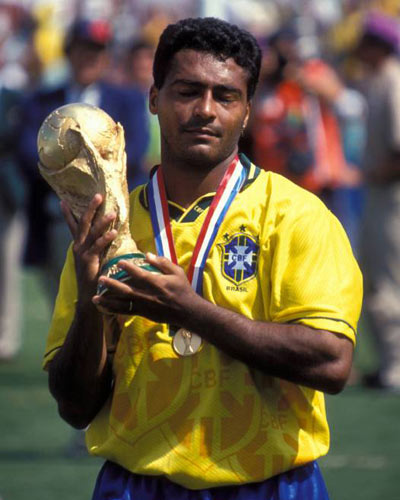
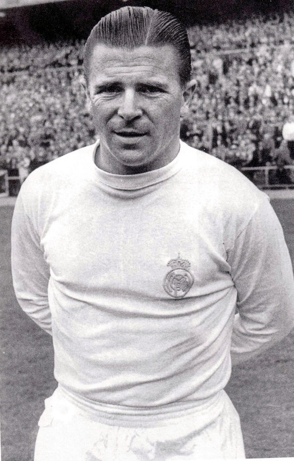

Favorite Football Players
| Naam | Foto | Doelpunten | Land | Positie |
|---|---|---|---|---|
| Lionel Messi |

|
850 | Argentinië | Aanvaller |
| Cristiano Ronaldo |

|
819 | Portugal | Aanvaller |
| Ronaldo Luís Nazário de Lima |

|
762 | Brazilië | Aanvaller |
| Romario de Souza Faria |  | 755 | Brazilië | Aanvaller |
| Puskás Ferenc |  | 724 | Hongarije | Aanvaller |